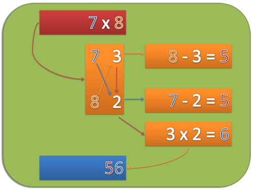

Vertikal und Kreuzweise
Zahlen nahe und unter 10
Um zwei einstellige Zahlen miteinander zu multiplizieren, gehe wie folgt vor:
- Schreibe beide Zahlen untereinander.
- Schreibe neben jede Zahl ihre Differenz zu 10.
- Subtrahiere die erste Zahl von der Differenz der zweiten Zahl, (oder zweite Zahl von der Differenz der Ersten) um den ersten Teil der Antwort zu erhalten.
- Multipliziere die beiden Differenzen um den zweiten Teil der Antwort zu erhalten.
Beispiel
